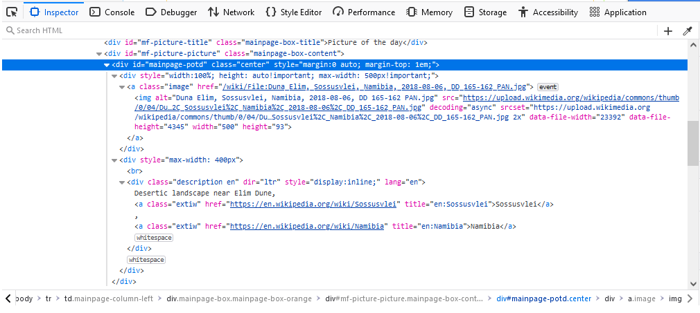

2023-03-07
Web scraping is the process of extracting data from webpages. This process is commonly automated in order to facilitate repeated scrapes or bulk data collection. The Python programming language, with its extensive range of available libraries, proves itself a capable tool for creating automated web scrapes.
In this guide, you will learn how to create a simple web scrape in Python. Intermediate knowledge of Python is assumed as well as familiarity with HTML, XPath, and your web browser’s developer tools. This guide will use Firefox for demonstration purposes, but the actions and terminology used should be similar to that of other browsers.
The goals of this simple web scrape will be to:
In order to keep the code simple, no error handling will be included.
The first step in creating a web scrape is to gather information regarding the webpage and the path of navigation. A web scrape navigates webpages in a manner similar to how you would in a browser. Since one of our goals is to navigate to Wikimedia Commons from Wikipedia’s homepage, we need to find a way for the web scrape to locate the link to Wikimedia Commons. For this, we will use XPath.
To begin, visit https://en.wikipedia.org in your web browser. The link to Wikimedia Commons is found near the bottom of the page, in the “Wikipedia’s sister projects” box. If we right-click on the link and choose the “Inspect” option, the browser’s developer console will appear with the link element highlighted in the Inspector tab.
With this view, we can see the hierarchy of elements leading to the Wikimedia Commons link element. We can use this to build our XPath query that will locate this link. Since the Wikimedia Commons link is found within the ul element with ID “sister-projects-list”, we can specify the XPath query as:
//ul[@id = 'sister-projects-list']/li/div/span/a[contains(text(), 'Commons')]Our next two goals are to locate the Picture of the Day’s image link and description text on the Wikimedia Commons homepage. If we navigate to Wikimedia Commons (https://commons.wikimedia.org), we can use the same process to inspect the elements of the Picture of the Day. Inspecting these elements shows that the image and its description text are located within two divs that are both found inside one parent div with ID “mainpage-potd”.

Since there are slightly different paths to the image and to the text, we will grab the parent div as a common element on the way to both. The XPath query to this div is:
//div[@id = 'mainpage-potd']From here, we can reach the image and the description text using XPath queries relative to this parent div:
Image:
./*[1]/a/imgDescription text:
./*[2]/divWith the page navigation mapped out, we can now create the web scrape Python script.
In order to navigate web pages, a web scrape needs to be able to create web requests and parse the responses. The two libraries in Python that we will use to do this are:
If either of these libraries are missing on your machine, install them using pip. Otherwise, we will import them at the beginning of our script.
import urllib.request
import lxml.htmlNext, we will define one reusable function. This function will make a request to a given URL and return the response data, which is the raw HTML of the webpage.
def getPageHtml(url):
request = urllib.request.Request(url=url)
con = urllib.request.urlopen(request)
return con.read()This function builds a simple GET request for the given URL using the urllib.request.Request class. The urllib.request.urlopen function uses the Request object to create the connection to the URL. With this connection, we read the response data and return it.
For clarity and simplicity, the rest of our code will not define any additional functions, but rather will be written out from top to bottom.
Our first two goals are to create a connection to Wikipedia’s homepage and to navigate to Wikimedia Commons. To start, we will create a variable to hold the URL to Wikipedia’s homepage and use it to get the page’s raw HTML using our getPageHtml function.
wikipediaUrl = 'https://en.wikipedia.org'
wikiHomeText = getPageHtml(wikipediaUrl)The variable wikiHomeText now stores the raw HTML text of the webpage. This is not very useful on its own. Fortunately, the lxml.html package contains the fromstring function that transforms raw HTML into a tree structure of objects representing the HTML elements. This tree can be parsed with XPath by calling the returned object’s xpath function, which takes an XPath query. Here we will use the XPath query to the Wikimedia Commons link that we found above.
wikiHomeTree = lxml.html.fromstring(wikiHomeText)
links = wikiHomeTree.xpath("//ul[@id = 'sister-projects-list']/li/div/span/a[contains(text(), 'Commons')]")
commonsLink = links[0].get('href')The xpath function returns a list of matched objects that represent HTML elements. For simplicity, we assume that matches were made and that the first object is the Wikimedia Commons link element. We then use the get function of that object to retrieve the URL of the element’s href attribute.
From here, we can work on our final two goals of retrieving the Picture of the Day’s image link and its description text. Since we now have the URL to Wikimedia Commons, we repeat the above steps in order to request the Wikimedia Commons homepage and create the tree object representing it. Once done, we then make use of the XPath query we found earlier that yields the Picture of the Day div.
commonsPageText = getPageHtml(commonsLink)
commonsTree = lxml.html.fromstring(commonsPageText)
potdDivs = commonsTree.xpath("//div[@id = 'mainpage-potd']")
potdDiv = potdDivs[0]As stated, this div is the parent element containing both the image and the description text. Since lxml.html creates a tree structure of all HTML elements in a webpage, each element itself can be treated as the root of a tree containing its own child elements. Therefore, we are able to use the xpath function of the parent div element with our XPath queries from above in order to extract the image link and description text.
potdImageElements = potdDiv.xpath("./*[1]/a/img")
potdImageUrl = potdImageElements[0].get("src")
potdTextDivs = potdDiv.xpath("./*[2]/div")
potdText = potdTextDivs[0].text_content()The image URL is obtained using the get function again to retrieve the src attribute of the img element. To obtain the description text, we use the text_content function. This function combines the text content of the immediate element with the text content of all its children.
Though we now have completed all of the goals of this simple web scrape, there is one final point worth mentioning regarding automated downloads. We could continue and use the urllib.request.urlretrieve function to download the image file. However, it is important to remember two things when automating downloads:
One ought to respect the bandwidth, resources, and wishes of a website regarding bulk downloads. Not all websites have the ability to handle large amounts of download requests. Some websites also request that web scrapes not be used to access the website. In addition, content on a website may be copyrighted, and downloading this material could constitute copyright infringement. Therefore, since the Picture of the Day image could be copyrighted, this guide will not include usage of the urllib.request.urlretrieve function to download the image.
You should now have a basic understanding of how to create a simple web scrape in Python. The steps we covered included gathering information regarding website navigation, creating XPath queries for navigation and resource location, using the urllib.request package to retrieve webpages, and using the lxml.html package to parse and interact with the HTML elements of a webpage. Though websites differ in their complexity, other web scrapes will follow this basic format at their core.
Copyright 2023 Chris Webber All Rights Reserved.